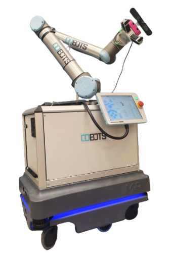
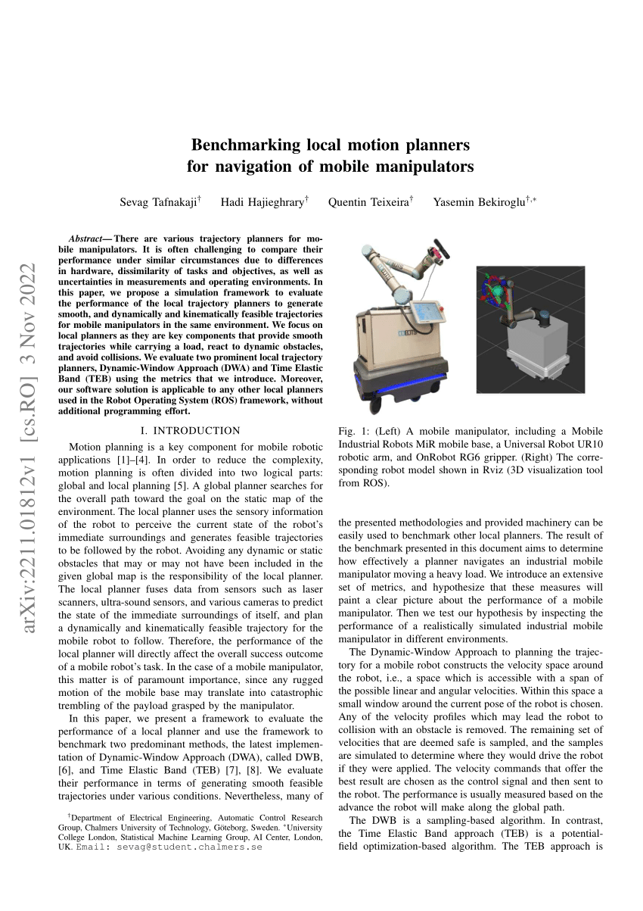

Home
About Me
Projects
Contact
Mobile Manipulation and Navigation benchmarking
Collection of major projects worked on so far. Will be continuously expanded
Bachelor project - Dexterous Robot Assistant
Learn More

Conference Paper
Learn More
